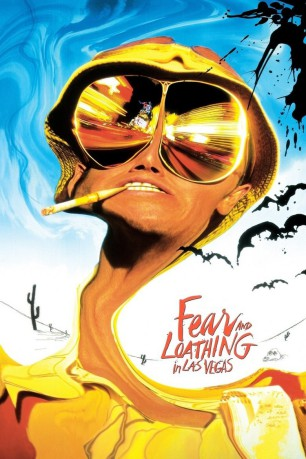

gesehen am 29.05.2015
gesehen am 29.05.2015Alternativ: Fear and Loathing in Las Vegas gesehen am 29.05.2015
 
 IMDB-Wertung: 7.7 / 10
IMDB-Wertung: 7.7 / 10  Metascore:
Metascore: 
Wir waren kurz hinter Barstow, inmitten der Wüste, als die Drogen anfingen zu wirken...Nevada, 1971: Begleitet von seinem Anwalt Dr. Gonzo rast Raoul Duke in seinem roten Cabrio gen Las Vegas. Für ein Magazin soll er dort von einem Autorennen in der Wüste berichten. Doch für die beiden steckt hinter dem Ausflug sehr viel mehr als eine bloße Reportage. Für sie bedeutet der Trip nach Las Vegas eine Reise in das wilde Herz der von Vietnamkrieg und diverser Skandale gebeutelten Vereinigten Staaten, bei der sie den amerikanischen Traum bei den Hörnern packen und ihm in die hässliche Fratze starren wollen. Ausgerüstet mit jeder denkbaren Droge unter der Sonne brechen sie auf zu ihrer Mission - und lassen sich dabei auch nicht von feindseligen Drogencops, dienst bewussten Highwaypolizisten, arroganten Hotelangestellten und ständig wiederkehrenden Horrortrips unterkriegen.
Jahr: 1998
Dauer: 118 Minuten
FSK: 16
Land: USA Studio: Universal PicturesTonspuren: DTS - ,
Untertitel: Deutsch,
Auflösung: 1080p (1920x816) Größe: 11264 MB
Genre: Abenteuer, Komödie, Drama
Regisseur:  Terry Gilliam
Terry Gilliam
Drehbuch: Hunter S. Thompson, Terry Gilliam, Tony Grisoni, Tod Davies, Alex Cox
Soundtrack: Ray Cooper
Darsteller:
 Johnny Depp als Raoul Duke
Johnny Depp als Raoul Duke Benicio Del Toro als Dr Gonzo
Benicio Del Toro als Dr Gonzo Tobey Maguire als Hitchhiker
Tobey Maguire als Hitchhiker Ellen Barkin als Waitress at North Star Cafe
Ellen Barkin als Waitress at North Star Cafe Katherine Helmond als Desk Clerk at Mint Hotel
Katherine Helmond als Desk Clerk at Mint Hotel Michael Jeter als L. Ron Bumquist
Michael Jeter als L. Ron Bumquist Penn Jillette als Carnie Talker
Penn Jillette als Carnie Talker Craig Bierko als Lacerda
Craig Bierko als Lacerda Flea als Musician
Flea als Musician Laraine Newman als Frog-Eyed Woman
Laraine Newman als Frog-Eyed Woman Harry Dean Stanton als Judge
Harry Dean Stanton als Judge Tim Thomerson als Hoodlum
Tim Thomerson als Hoodlum Larry Cedar als Car Rental Agent - Los Angeles
Larry Cedar als Car Rental Agent - Los Angeles Richard Riehle als Dune Buggy Driver
Richard Riehle als Dune Buggy Driver Cameron Diaz als Blonde TV Reporter
Cameron Diaz als Blonde TV Reporter Richard Portnow als Wine Colored Tuxedo
Richard Portnow als Wine Colored Tuxedo Steve Schirripa als Goon
Steve Schirripa als Goon Verne Troyer als Wee Waiter
Verne Troyer als Wee Waiter Christopher Meloni als Clerk at Flamingo Hotel
Christopher Meloni als Clerk at Flamingo Hotel Christina Ricci als Lucy
Christina Ricci als Lucy Gregory Itzin als Clerk at Mint Hotel
Gregory Itzin als Clerk at Mint Hotel Troy Evans als Police Chief
Troy Evans als Police Chief Larry Brandenburg als Cop in Back
Larry Brandenburg als Cop in Back Jenette Goldstein als Alice the Maid
Jenette Goldstein als Alice the Maid Stephen Bridgewater als Human Cannonball
Stephen Bridgewater als Human Cannonball Debbie Reynolds als Herself
Debbie Reynolds als HerselfDatei: X:\1998\Fear and Loathing in Las Vegas (1998, FSK16, 1920x816).mkv seit 22.05.2015
Festplatte: HD 1996-2002
 Es gibt insgesamt 86 Filme in der Gruppe '1998'
Es gibt insgesamt 86 Filme in der Gruppe '1998'